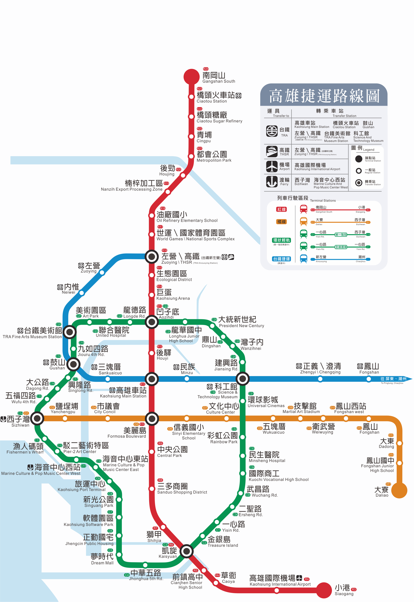
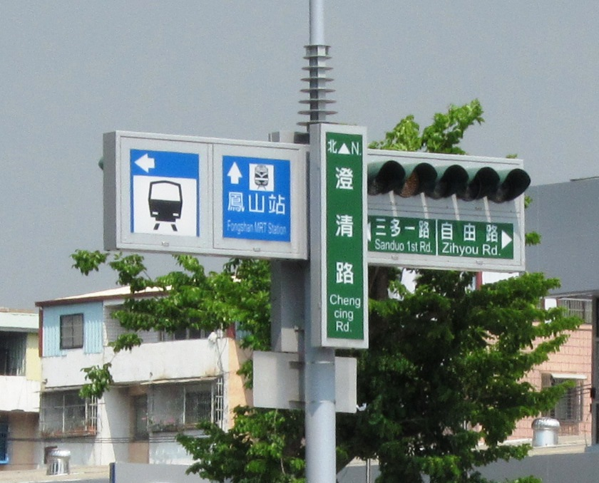
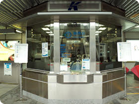
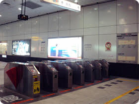
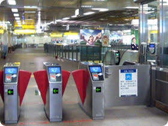
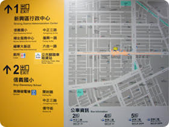

首頁
English
中文
台南
景點
美食
節日
交通
參考網站
奇美博物館
台江國家公園
台南旅遊網站
高雄
景點
美食
節日
交通
參考網站
高雄捷運
國立科學工藝博物館
駁2藝術特區
南台灣
交通系統
高雄擁有便利的陸、空、 海大眾運輸工具。
高雄捷運:
怎麼搭捷運？
1. 跟著捷運指標到達捷運站
2. 進入捷運站
3. 買車票
單程票可以在自動售票機購買。
特定的車票可以在服務中心購買。
4. 進入和離開付費區域
-自動閘門
-指定通道
5. 離開捷運站
依捷運站內標示選擇出口離開捷運站
出入口標示
地圖





